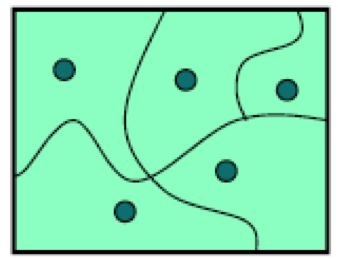
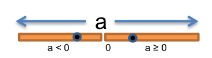
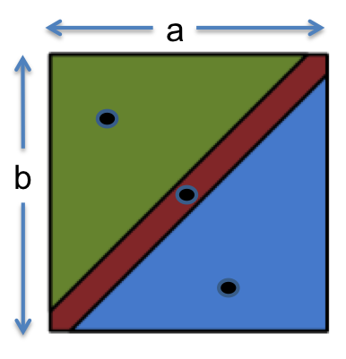
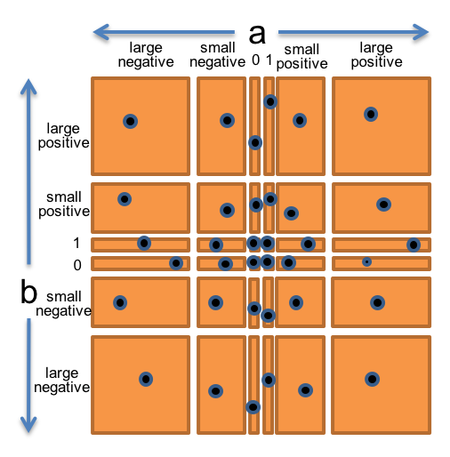
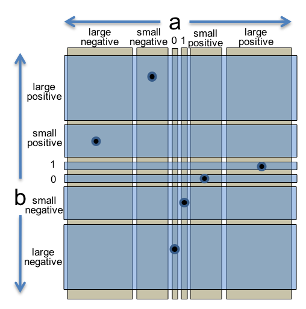
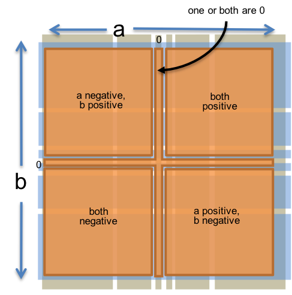

Reading 2: Testing
Software in 6.102
Objectives
After today’s class, you should:
- understand the value of testing, and know the process of test-first programming;
- be able to judge a test suite for correctness, thoroughness, and size;
- be able to design a test suite for a function by partitioning its input space and choosing good test cases;
- be able to judge a test suite by measuring its code coverage; and
- understand and know when to use black box vs. glass box testing, unit tests vs. integration tests, and automated regression testing.
Validation
Testing is an example of a more general process called validation. The purpose of validation is to uncover problems in a program and thereby increase your confidence in the program’s correctness. Validation includes:
- Formal reasoning about a program, usually called verification. Verification constructs a formal proof that a program is correct. Verification is tedious to do by hand, and automated tool support for verification is still an active area of research. Nevertheless, small, crucial pieces of a program may be formally verified, such as the scheduler in an operating system, or the bytecode interpreter in a virtual machine, or the filesystem in an operating system.
- Code review. Having somebody else carefully read your code, and reason informally about it, can be a good way to uncover bugs. It’s much like having somebody else proofread an essay you have written. We’ll discuss code review in another reading.
- Testing. Running the program on carefully selected inputs and checking the results.
Why software testing is hard
Here are some approaches that unfortunately don’t work well in the world of software.
Exhaustive testing is infeasible. The space of possible test cases is generally too big to cover exhaustively. Imagine exhaustively testing a 32-bit floating-point multiply operation, a*b. There are 264 test cases!
Haphazard testing (“just try it and see if it works”) is less likely to find bugs, unless the program is so buggy that an arbitrarily-chosen input is more likely to fail than to succeed. It also doesn’t increase our confidence in program correctness.
Random or statistical testing works better for finding flaws in other kinds of engineered artifacts than finding bugs in software. Other engineering disciplines can test small random samples (e.g. 1% of hard drives manufactured) and infer the defect rate for the whole production lot. Physical systems can use many tricks to speed up time, like opening a refrigerator 1000 times in 24 hours instead of 10 years. These tricks give known failure rates (e.g. mean lifetime of a hard drive), but they assume continuity or uniformity across the space of defects. This is true for physical artifacts.
But this is not true for software. Software behavior varies discontinuously and discretely across the space of possible inputs. The system may seem to work fine across a broad range of inputs, and then abruptly fail at a single boundary point. The famous Pentium division bug affected approximately 1 in 9 billion divisions. Stack overflows, out of memory errors, and numeric overflow bugs tend to happen abruptly, and always in the same way, without probabilistic variation. That’s different from physical systems, where there is often visible evidence that the system is approaching a failure point (e.g. cracks in a bridge), or failures are distributed probabilistically near the failure point (so that statistical testing will observe some failures even before the point is reached).
Instead, test cases should be chosen carefully and systematically. Techniques for systematic testing are the primary focus of this reading. Note that random testing is used as a tool in software engineering (particularly to increase confidence that common-case behavior will be reliable or efficient enough, not just for finding bugs), but it’s best to use it in combination with systematic testing.
reading exercises
/**
* @param bits an array of 32 true/false values
* @returns the Boolean AND of all values in the array
*/
function andAll(bits: Array<boolean>): boolean {
let result = bits[0];
for (let i = 1; i < 31; i++) {
result = result && bits[i];
}
return result;
}Louis Reasoner, who wrote this function and thinks it should work, tries it on a couple of haphazardly-chosen test cases shown below. What is the result of each test case?
andAll([true, true, true, ..., true, true]) // 32 true values
andAll([false, true, false, true, ..., false, true]) // 32 values alternating between false and true
Louis is satisfied. But unfortunately his code has an off-by-one error. Which expression has the bug?
(missing explanation)
Which is closest to the number of test cases required to test this function exhaustively?
(missing explanation)
Which is closest to the probability of finding the off-by-one bug with a random test (i.e. picking a single input to try, uniformly at random from the possible inputs)?
(missing explanation)
In the 1990s, the Ariane 5 launch vehicle, designed and built for the European Space Agency, self-destructed 37 seconds after its first launch.
The reason was a control software bug that went undetected. The Ariane 5’s guidance software was reused from the Ariane 4, which was a slower rocket. When the velocity calculation converted from a 64-bit floating point number (the same as a number in TypeScript, though this software wasn’t written in TypeScript) to a 16-bit signed integer, it overflowed the small integer and caused an exception to be thrown. The exception handler had been disabled for efficiency reasons, so the guidance software crashed. Without guidance, the rocket crashed too. The cost of the failure was $1 billion.
What ideas does this story demonstrate?
(missing explanation)
Test-first programming
Before we dive in, we need to define some terms:
A module is a part of a software system that can be designed, implemented, tested, and reasoned about separately from the rest of the system. In this reading, we’ll focus on modules that are functions. In future readings, we’ll broaden our view to think about larger modules, like a class with multiple interacting methods.
A specification (or spec) describes the behavior of a module. For a function, the specification gives the types of the parameters and any additional constraints on them (e.g.
sqrt’s parameter must be nonnegative). It also gives the type of the return value and how the return value relates to the inputs. In TypeScript code, the specification consists of the function signature and the comment above it that describes what it does.A module has an implementation that provides its behavior, and clients that use the module. For a function, the implementation is the body of the function, and the clients are other pieces of code that call the function. The specification of the module constrains both the client and the implementation. We’ll have much more to say about specifications, implementations, and clients a few classes from now.
A test case is a particular choice of inputs, along with the expected output behavior required by the specification.
You have already started using these concepts on Problem Set 0. You were given some specifications for TypeScript functions and asked to write an implementation for each one. You were also given a test suite for each function that you could run to see if your implementation obeyed the spec.
It turns out that this is a good pattern to follow when designing a program from scratch. In test-first programming, you write the spec and the tests before you even write any code. The development of a single function proceeds in this order:
- Spec: Write a specification for the function.
- Test: Write tests that exercise the specification.
- Implement: Write the implementation.
Once your implementation passes the tests you wrote, you’re done.
The biggest benefit of test-first programming is safety from bugs. Don’t leave testing until the end of development, when you have a big pile of unvalidated code. Leaving testing until the end only makes debugging longer and more painful, because bugs may be anywhere in your code. It’s far more pleasant to test your code as you develop it.
Systematic testing
Rather than exhaustive, haphazard, or randomized testing, we want to test systematically. Systematic testing means that we are choosing test cases in a principled way, with the goal of designing a test suite with three desirable properties:
Correct. A correct test suite is a legal client of the specification, and it accepts all legal implementations of the spec without complaint. This gives us the freedom to change how the module is implemented internally without necessarily having to change the test suite. We will discuss in more detail about what legal means with respect to a specification in an upcoming reading.
Thorough. A thorough test suite finds actual bugs in the implementation, caused by mistakes that programmers are likely to make.
Small. A small test suite, with few test cases, is faster to write in the first place, and easier to update if the specification evolves. Small test suites are also faster to run. You will be able to run your tests more frequently if your test suites are small and fast.
By these criteria, exhaustive testing is thorough but infeasibly large. Haphazard testing tends to be small but not thorough. Randomized testing can achieve thoroughness only at the cost of large size.
Designing a test suite for both thoroughness and small size requires having the right attitude. Normally when you’re coding, your goal is to make the program work. But as a test suite designer, you want to make it fail. That’s a subtle but important difference. A good tester intentionally pokes at all the places the program might be vulnerable, so that those vulnerabilities can be eliminated.
The need to adopt a testing attitude is another argument for test-first programming. It is all too tempting to treat code you’ve already written as a precious thing, a fragile eggshell, and test it very lightly just to see it work. For thorough testing, though, you have to be brutal. Test-first programming allows you to put on your testing hat and adopt that brutal perspective before you’ve even written any code.
Choosing test cases by partitioning
Creating a good test suite is a challenging and interesting design problem. We want to pick a set of test cases that is small enough to be easy to write and maintain and quick to run, yet thorough enough to find bugs in the program.

To do this, we divide the program’s input space into subdomains, each consisting of a set of inputs. (The name subdomain comes from the fact that it is a subset of the domain, the input space of a mathematical function.) Taken together, the subdomains form a partition. A partition is a collection of non-empty disjoint sets that completely covers the input space, so that every input lies in exactly one subdomain (no overlap between subdomains). Then, we choose one test case from each subdomain, and that’s our test suite.
The idea behind subdomains is to divide the input space into sets of similar inputs on which the program has similar behavior, so that we only need to test one representative for each set. This approach makes the best use of limited testing resources by choosing dissimilar test cases (for smallness) and forcing the testing to explore areas of the input space that haphazard or random testing might not reach (for thoroughness).
Note that for the purpose of partitioning, a program’s input space only includes legal inputs, for which the correct behavior is specified (and therefore testable). Inputs for which the program does not have defined behavior are not part of the legal input space and should not be included in the partition. This distinction is subtle and will make more sense with some examples and further discussion of specifications in a future reading.
Example: abs()
Let’s start with a simple example from the JavaScript library, the Math.abs() function:
/**
* ...
* @param a the argument whose absolute value is to be determined
* @returns the absolute value of the argument.
*/
function abs(a: number): numberMathematically, this is a function of the following type:

The function has a one-dimensional input space, consisting of all the possible values of a.
Thinking about how the absolute value function behaves, we might start by partitioning the input space into these two subdomains: { a | a ≥ 0 } and { a | a < 0 }.
On the first subdomain, abs should return a unchanged.
On the second subdomain, abs should negate it.
To write a partition compactly, we omit the { a | … } frame of each set description, and simply write a list of predicates like so:
// partition: a >= 0; a < 0To choose test cases for our test suite, we pick an arbitrary value a from each subdomain of the partition, for example:
Example: max()
Now let’s look at another example from the JavaScript library, Math.max().
Although max() can take any number of arguments, we will focus just on the two-argument form for now:
/**
* ...
* @param a an argument
* @param b another argument
* @returns the larger of a and b.
*/
function max(a: number, b: number): numberMathematically, this is a function of two arguments:
max : number × number → number

So we have a two-dimensional input space, consisting of all pairs of numbers (a,b). Now let’s partition it. From the specification, it makes sense to choose the subdomains { (a,b) | a < b } and { (a,b) | a > b }, because the spec calls for different behavior on each one: inputs in the former subdomain should return b, and those in the latter subdomain should return a. But we can’t stop there, because these subdomains are not yet a partition of the input space. A partition must completely cover the set of possible inputs. So we need to add { (a,b) | a = b }, where the function could return either a or b. Expressed compactly, the partition looks like this:
// partition: a < b; a > b; a = bTo summarize, to form a partition, the subdomains should have three desirable properties:
- subdomains should be disjoint, with no intersections between them;
- subdomains should be complete, so that their union covers the legal input space;
- subdomains should be nonempty, so that a legal test case can be chosen from each one.
reading exercises
Suppose you want to partition the input space of this square root function:
/**
* @param x must be nonnegative
* @returns square root of x
*/
function sqrt(x: number): numberAssess the quality of each of the following candidate partitions. Are the proposed subdomains disjoint, complete, and nonempty, thus forming a mathematical partition of the input space? A good partition should check all three boxes.
// partition: x < 0; x >= 0(missing explanation)
// partition: x is a perfect square; x is > 0 but not a perfect square(missing explanation)
// partition: x=0, x=1, x=7, x=16(missing explanation)
Now consider this specification:
/**
* @param x an integer
* @param y an integer, where x and y are not both 0
* @returns the greatest common divisor of x and y
*/
function gcd(x: number, y: number): numberAssess each of the following candidate partitions for gcd.
// partition: x and y are not both 0(missing explanation)
// partition: x is divisible by y; y is divisible by x; x and y are relatively prime(missing explanation)
Include boundaries in the partition
Bugs often occur at boundaries between subdomains. Some examples:
- 0 is a boundary between positive numbers and negative numbers
- the maximum and minimum values of numeric types, like
Number.MAX_SAFE_INTEGERorNumber.MAX_VALUE - emptiness for collection types, like the empty string, empty array, or empty set
- the first and last element of a sequence, like a string or array
Why do bugs often happen at boundaries?
One reason is that programmers often make off-by-one mistakes, like writing <= instead of <, or initializing a counter to 0 instead of 1.
Another is that some boundaries may need to be handled as special cases in the code.
Yet another is that boundaries may be places of discontinuity in the code’s behavior.
When a number variable used as an integer grows beyond Number.MAX_SAFE_INTEGER, for example, it suddenly starts to lose precision.
We incorporate boundaries as single-element subdomains in the partition, so that the test suite will necessarily include the boundary value as a test case.
For abs, we would add a subdomain for the relevant boundary:
Our original two subdomains would then shrink to exclude the boundary values: { a | a > 0 } and { a | a < 0 }.
This is still a partition of the input space of abs: the three subdomains are disjoint and completely cover the input space.
One way to write it compactly looks like this:
// partition:
// a < 0
// a = 0
// a > 0reading exercises
/**
* @param winsAndLosses a string of length at most 5 consisting of 'W' or 'L' characters
* @returns the fraction of characters in winsAndLosses that are 'W'
*/
function winLossRatio(winsAndLosses: string): numberWhich of the following are appropriate boundary values for testing this function?
(missing explanation)
Example: BigInt multiplication
Let’s look at a slightly more complicated example.
BigInt is a type built into TypeScript that can represent integers of any size, unlike the type number that only has a limited range.
BigInt supports the usual integer operations like +, -, *, /, and **.
For example, here’s how it might be used:
let a = BigInt(Number.MAX_SAFE_INTEGER); // 2^53 - 1
let b = BigInt(4);
let ab = a * b; // should be 2^55 - 4We can think of * as an (overloaded) function taking two inputs, each of type BigInt, and producing one output of type BigInt:
multiply : BigInt × BigInt → BigInt
We again have a two-dimensional input space, consisting of all the pairs of integers (a,b). Thinking about how sign rules work with multiplication, we might start with these subdomains:
- a and b are both positive
- a and b are both negative
- a is positive, b is negative
- a is negative, b is positive
There are also some boundary values for multiplication that we should check:
Finally, because the purpose of BigInt is to represent arbitrarily-large integers, we should make sure to try integers that are very big – at least bigger than Number.MAX_SAFE_INTEGER, which is 253 - 1, a 16-digit decimal integer.
- a or b is small or large in magnitude (i.e., small enough to represent exactly in a
numbervalue, or too large for anumber)
Let’s bring all these observations together into a single partition of the whole (a,b) space. We’ll choose a and b independently from:

- 0
- 1
- small positive integer (≤
Number.MAX_SAFE_INTEGERand > 1) - small negative integer (≥
Number.MIN_SAFE_INTEGERand < 0) - large positive integer (>
Number.MAX_SAFE_INTEGER) - large negative integer (<
Number.MIN_SAFE_INTEGER)
So this would produce 6 × 6 = 36 subdomains that partition the space of pairs of integers.
To produce the test suite from this partition, we would pick an arbitrary pair (a,b) from each square of the grid, for example:
- (a,b) = (0, 0) to cover (0, 0)
- (a,b) = (0, 1) to cover (0, 1)
- (a,b) = (0, 8392) to cover (0, small positive integer)
- (a,b) = (0, -7) to cover (0, small negative integer)
- …
- (a,b) = (-1060, -10810) to cover (large negative, large negative)
The figure at the right shows how the two-dimensional (a,b) space is divided by this partition, and the points are test cases that we might choose to completely cover the partition.
Using multiple partitions
The examples so far used only one partition – one collection of disjoint subdomains – across the entire input space.
For functions with multiple parameters, this can become costly.
Each parameter may have interesting behavior variation and several boundary values, so forming a single partition of the input space from the Cartesian product of the behavior on each parameter leads to a combinatorial explosion in the size of the resulting test suite.
We saw this already with BigInt multiplication, in which the Cartesian product partition already had 6 × 6 = 36 subdomains, requiring 36 test cases to cover.
For a function with n parameters, the Cartesian-product approach produces a test suite of size exponential in n, which quickly becomes infeasible for manual test authoring.

An alternative approach is to treat the features of each input a and b as two separate partitions of the input space. One partition only considers the value of a:
And the other partition only considers the value of b:
These two partitions are illustrated at the right. Every input pair (a,b) belongs to exactly one subdomain from each partition.
We might write the two partitions compactly as follows:
// partition on a:
// a = 0
// a = 1
// a is small positive integer > 1
// a is small negative integer
// a is large positive integer
// a is large negative integer
// (where "small" fits in a TypeScript number, and "large" doesn't)
// partition on b:
// b = 0
// b = 1
// b is small positive integer > 1
// b is small negative integer
// b is large positive integer
// b is large negative integerWe still want to cover every subdomain with a test case, but now a single test case can cover multiple subdomains from different partitions, making the test suite more efficient. We can cover both partitions completely with just 6 test cases, as shown on the right.

Partitioning a and b independently raises the risk that you’re no longer testing the interaction between them. For example, sign handling in multiplication is a possible source of bugs, and the sign of the result depends on the signs of both a and b. But we can add an additional partition that captures this interaction:
// partition on signs of a and b:
// a and b are both positive
// a and b are both negative
// a positive and b negative
// a negative and b positive
// one or both are 0Now we have three partitions, with 6, 6, and 5 subdomains each, but we don’t need the Cartesian product of 6 × 6 × 5 test cases to cover them. A test suite with 6 carefully-chosen test cases can cover the subdomains of all three partitions.
We can continue to add partitions this way, as we think more about the spec and observe other behavioral variations that might lead to bugs. With careful test case selection, additional partitions should require few (if any) additional test cases.
Sometimes we may want to use the Cartesian product approach on multiple partitions, to produce a more thorough test suite. But even in those cases, the Cartesian product may be smaller than we expect. When subdomains from different partitions turn out to be mutually exclusive, the Cartesian product won’t include a subdomain for that particular combination of subdomains. We’ll see an example of that in one of the exercises below.
As a starting point for test-first programming, however, a small test suite that covers each subdomain of several thoughtfully-chosen partitions strikes a good balance between size and thoroughness. The test suite may then grow further with glass box testing, code coverage measurement, and regression testing, which we’ll see later in this reading.
reading exercises
Consider this partition on a from above:
// partition on a:
// a = 0
// a = 1
// a is small integer > 1
// a is small integer < 0
// a is large positive integer
// a is large negative integer
// (where "small" fits in a TypeScript number, and "large" doesn't)This partition actually combines several distinct concerns: the sign of a, the magnitude of a (small or large), and the boundary values 0 and 1.
We can instead think about these concerns as independent partitions. From among the choices below, choose a subset that would be legal partitions and that together would capture the same concerns:
(missing explanation)
Consider again this partition on a from above:
// partition on a:
// a = 0
// a = 1
// a is small integer > 1
// a is small integer < 0
// a is large positive integer
// a is large negative integer
// (where "small" fits in a number, and "large" doesn't)This partition has 6 subdomains, so 6 different values of a can cover it, one chosen for each subdomain.
Suppose we used these three partitions of a instead:
// partition on a: 0, positive, negative
// partition on a: 1, !=1
// partition on a: small (fits in a number), large (doesn't fit in a number)If we just want to cover every subdomain of the three partitions, how many different values of a would we need?
(missing explanation)
If we want to cover the Cartesian product of these three partitions, how many different values of a would we need?
(missing explanation)
It is sometimes convenient to think about and write an input space partition in terms of the output of the function, because variations in behavior may be more visible there. For example:
// partition on a*b: 0, positive, negativeis shorthand for the three-subdomain partition consisting of:
{ (a,b) | a*b = 0 }
{ (a,b) | a*b > 0 }
{ (a,b) | a*b < 0 }
Using this approach, how many test cases are needed to cover the following three partitions?
// partition on a: 0, positive, negative
// partition on b: 0, positive, negative
// partition on a*b: 0, positive, negative(missing explanation)
How many are needed to cover the following two partitions?
// partition on value of abs(x): same as x, different from x
// partition on sign of abs(x): 0, positive(missing explanation)
Consider the following specification:
/**
* Reverses the end of a string.
* For example:
* reverseEnd("abcdef", 2) returns "abfedc"
* reverseEnd("abcdef", 0) returns "fedcba"
* reverseEnd("abcdef", 6) returns "abcdef"
*
* @param text string that will have its end reversed
* @param start the index from which the remainder of the input is reversed.
* Requires start to be an integer, 0 <= start <= text.length
* @returns input text with the substring from `start` to the end of the string reversed
*/
function reverseEnd(text: string, start: number): stringWhich of the following are reasonable partitions involving the start parameter?
(missing explanation)
Which of the following are reasonable partitions involving the text parameter?
(missing explanation)
Automated unit testing
A well-tested program will have tests for every individual module that it contains. A test that tests an individual module, in isolation if possible, is called a unit test.
Nothing makes unit tests easier to run, and more likely to be run, than complete automation. Automated testing means running the tests and checking their results automatically. The code that runs tests on a module is a test driver (also known as a test harness or test runner). A test driver should not be an interactive program that prompts you for inputs and prints out results for you to manually check. Instead, a test driver should invoke the module itself on fixed test cases and automatically check that the results are correct. The result of the test driver should be either “all tests OK” or “these tests failed: …”
Most programming languages have at least one popular library for writing automated unit tests, including JUnit for Java and unittest for Python. For JavaScript and TypeScript, a popular choice is Mocha.
A Mocha unit test is written as a call to the function it(), with the name of the test as its first argument, and the body of the test (written as a function expression) as the second argument.
The test body typically contains one or more calls to the module being tested, and then checks the results using assertion functions like assert, assert.strictEqual, or assert.throws.
For example, a single unit test for max might look like this:
it("covers a < b", function() {
assert.strictEqual(Math.max(1, 2), 2);
});Note that the order of the parameters to assert.strictEqual is important.
The first parameter should be the actual result – what the code actually does.
The second parameter should be the expected result – usually a constant – that the test wants to see.
If you switch them around, then Mocha may produce a confusing error message when the test fails.
An assertion can also take an optional message string as the last argument, which you should use to make the test failure clearer.
To collect a set of unit tests into a test suite, put them inside a call to describe().
For example, the tests we chose for max above might look like this when implemented for Mocha:
describe("Math.max", function() {
it("covers a < b", function() {
assert.strictEqual(Math.max(1, 2), 2);
});
it("covers a = b", function() {
assert.strictEqual(Math.max(9, 9), 9);
});
it("covers a > b", function() {
assert.strictEqual(Math.max(10, -9), 10);
});
});A test suite can contain any number of it() functions, which are run independently when you run the test suite with Mocha.
If an assertion fails in a test case, then that test case returns immediately, and Mocha records a failure for that test.
Even if one test fails, the others in the suite will still be run.
Note that automated testing frameworks like Mocha make it easy to run the tests, but you still have to come up with good test cases yourself. Automatic test generation is a hard problem that’s still a subject of active computer science research.
reading exercises
Consider this Mocha test, which is intended to test a function pickRandomly() that picks a random number from its input set:
it("should return a number found in the set", function() {
const set = new Set<number>([293, 384, 10, 5, -3, 99]);
const result: number = pickRandomly(set);
/* ASSERTION HERE */
});Which assertion, put where the code says /* ASSERTION HERE */, would be both correct and useful for debugging?
(missing explanation)
The comparison used by strictEqual works as expected for built-in types like string and number, but it does not help us with data structures.
For example, all of the following assertions fail:
As we’ll see in later readings, they fail for good reason: the question of whether these mutable arrays and sets are “equal” is quite a thorny one. So when we’re testing a function that returns this kind of structure, we have two options:
Use
assert.deepStrictEqual, which performs an equality comparison that considers arrays, sets, maps, and object literals with identical contents to be equal. This is most useful when we know exactly what the correct structure is. Butassert.deepStrictEqualhas a dangerous caveat: only use it to compare structures of built-in arrays, sets, maps, and object literals containing primitive types like numbers and strings — not anything else, and most importantly, not any user-defined types. We’ll see why in future classes.Use simple
assertandassert.strictEqualassertions on properties of the structure. This is most useful when, as in the previous exercise, there are multiple correct outputs.
Documenting your testing strategy
It’s a good idea to write down the testing strategy you used to create a test suite: the partitions, their subdomains, and which subdomains each test case was chosen to cover. Writing down the strategy makes the thoroughness of your test suite much more visible to the reader, and easier for you to spot missing partitions or subdomain coverage.
Document the partitions and subdomains in a comment at the top of the describe() function.
For example, to document our strategy for testing max, we would write this:
describe("max", function() {
/*
* Testing strategy
*
* partition:
* a < b
* a > b
* a = b
*/
it(...); // test cases here
it(...);
it(...);
...
});Each test case should be named by the subdomain(s) it covers, e.g.:
it("covers a < b", function() {
assert.strictEqual(Math.max(1, 2), 2);
});Most test suites will have more than one partition, and most test cases will cover multiple subdomains.
For example, here’s a strategy for BigInt multiplication, using seven partitions:
describe("multiplication", function() {
/*
* Testing strategy
*
* cover the cartesian product of these partitions:
* partition on a: positive, negative, 0
* partition on b: positive, negative, 0
* partition on a: 1, !=1
* partition on b: 1, !=1
* partition on a: small (fits in a TypeScript number), or large (doesn't fit)
* partition on b: small, large
*
* cover the subdomains of these partitions:
* partition on signs of a and b:
* both positive
* both negative
* different signs
* one or both are 0
*/
it("covers a = 1, b != 1, a and b both positive", function() {
assert.strictEqual(BigInt(1) * BigInt(33), BigInt(33));
});
it("covers a is positive, b is negative, "
+ "a fits in a number, b fits in a number, "
+ "a and b have different signs", function() {
assert.strictEqual(BigInt(73) * BigInt(-2), BigInt(-146));
});
...
});Black box and glass box testing
Recall from above that the specification is the description of the function’s behavior — the types of parameters, type of return value, and constraints and relationships between them.
Black box testing means choosing test cases only from the specification, not the implementation of the function.
That’s what we’ve been doing in our examples so far.
We partitioned and looked for boundaries in abs, max, and BigInt multiplication without looking at the actual code for these functions.
In fact, if we were following the test-first programming approach, we had not even written the code for these functions yet.
Glass box testing means choosing test cases with knowledge of how the function is actually implemented. For example, if the implementation selects different algorithms depending on the input, then you should partition around the points where different algorithms are chosen. If the implementation keeps an internal cache that remembers the answers to previous inputs, then you should test repeated inputs to see if the cache is working properly.
For the case of BigInt multiplication, when we finally implemented it, we may have decided to represent the integer as an array of decimal digits.
This decision introduces new boundaries in the function’s behavior.
Multiplying two single-digit numbers is trivial, but arrays of two or more digits demand the greater complexity of multiple-digit multiplication.
So glass box testing of this implementation might introduce a new partition based on the length of the internal array.
(A more efficient representation for BigInt might be an array of 32-bit unsigned integers like Uint32Array, but the principle is the same — a sequence of digits of base 232 rather than base 10.)
When doing glass box testing, you must take care that your test cases don’t require specific implementation behavior that isn’t specifically called for by the spec. For example, if the spec says “throws an exception if the input is poorly formatted,” then your test shouldn’t check specifically for a TypeError exception just because that’s what the current implementation does. The specification in this case allows any exception to be thrown, so your test case should likewise be general in order to be correct, and preserve the implementor’s freedom. We’ll have much more to say about this in the class on specs.
reading exercises
Consider the following function:
/**
* Sort an array of numbers in nondecreasing order. Modifies the array so that
* values[i] <= values[i+1] for all 0 <= i < values.length-1
*/
function sort(values: Array<number>): void {
// choose a good algorithm for the size of the array
if (values.length < 10) {
radixSort(values);
} else if (values.length < 1_000_000_000) {
quickSort(values);
} else {
mergeSort(values);
}
}Which of the following test cases are likely to be boundary values produced by glass box testing?
(missing explanation)
Coverage
One way to judge a test suite is to ask how thoroughly it exercises the program. This notion is called coverage. Here are three common kinds of coverage:
- Statement coverage: is every statement run by at least one test case?
- Branch coverage: for every control branch in the program (such as an
iforwhileor?:ternary expression), is each side of the branch taken by at least one test case? - Path coverage: is every possible combination of branches — every path through the program — taken by at least one test case?
{kind=link}
Branch coverage is stronger (i.e. requires more tests to achieve) than statement coverage, and path coverage is stronger than branch coverage. In industry, 100% statement coverage is a common goal, but even that is rarely achieved due to unreachable defensive code (like “should never get here” assertions). 100% branch coverage is highly desirable, and safety-critical industry code has even more arduous criteria (e.g., MC/DC, modified condition/decision coverage). Unfortunately 100% path coverage is infeasible, requiring exponential-size test suites to achieve.
A standard approach to testing is to add tests until the test suite achieves adequate statement coverage: i.e., so that every reachable statement in the program is executed by at least one test case. In practice, statement coverage is usually measured by a code coverage tool, which counts the number of times each statement is run by your test suite. With such a tool, glass box testing is easy; you just measure the coverage of your black box tests, and add more test cases until all important statements are logged as executed.
A good code coverage tool for JavaScript and TypeScript is c8, shown on the right.
In the tool’s HTML output, a line that has been executed by the test suite has a green mark in the left margin (which also shows the number of times the line was executed).
A line not yet covered is colored red.
A line containing a branch that has been executed in only one direction – always true but never false, or vice versa – has an I or E icon, indicating which path was never taken (I for “if” or E for “else”).
If you saw the result on the right from your coverage tool, your next step would be to come up with a test case that causes the if test to be true at least once, and add it to your test suite so that the red line becomes green.
reading exercises
Consider this function (reproduced from the screenshot above):
/**
* @param letters a string of lowercase English letters
* @returns the set of vowels found in letters
*/
export function getVowelsIn(letters: string): string {
const VOWELS = "aeiou";
let vowelsFound = "";
for (let vowel of VOWELS) {
if (letters.indexOf(vowel) !== -1) {
vowelsFound += vowel;
}
}
return vowelsFound;
}Suppose you have just one test case for this function, which only calls getVowelsIn("aeiou").
What level of coverage of the body of this function does this test case achieve?
(missing explanation)
This exercise asks you to explore the output of the c8 coverage tool.
Download this small program, ex02-coverage.zip, and unpack it.
In your terminal prompt,
cdinto theex02-coveragefolder you just extracted, and run:npm installOpen
ex02-coverage/hailstone.tsin Visual Studio Code. You should see this code:let n: number = 3; while (n !== 1) { if (n % 2 === 0) { n = n / 2; } else { n = 3 * n + 1; } }Back in your terminal prompt, run the program using the code coverage tool:
npm run coverageOpen the coverage report in your web browser: you will find it in the file
ex02-coverage/coverage/index.html. Then click onhailstone.tsin the report to see a line-by-line coverage report for that source file.
By changing the initial value of n in the first line of the code, you will be able to observe how the code coverage tool would highlight different lines of code differently.
(missing explanation)
(missing explanation)
(missing explanation)
Unit and integration testing
We’ve so far been talking about unit tests that test a single module in isolation. Testing modules in isolation leads to much easier debugging. When a unit test for a module fails, you can be more confident that the bug is found in that module, rather than anywhere in the program.
In contrast to a unit test, an integration test tests a combination of modules, or even the entire program. If all you have are integration tests, then when a test fails, you have to hunt for the bug. It might be anywhere in the program. Integration tests are still important, because a program can fail at the connections between modules. For example, one module may be expecting different inputs than it’s actually getting from another module. But if you have a thorough set of unit tests that give you confidence in the correctness of individual modules, then you’ll have much less searching to do to find the bug.
Suppose you’re building a document search engine.
Two of your modules might be load(), which loads a file, and extract(), which splits a document into its component words:
/**
* @returns the contents of the file
*/
function load(filename: string): string { ... }
/**
* @returns the words in string s, in the order they appear,
* where a word is a contiguous sequence of
* non-whitespace and non-punctuation characters
*/
function extract(s: string): Array<string> { ... }These functions might be used by another module index() to make the search engine’s index:
/**
* @returns an index mapping a word to the set of filenames
* containing that word, for all files in the input set
*/
function index(filenames: Set<string>): Map<string, Set<string>> {
...
for (const file of files) {
const doc = load(file);
const words = extract(doc);
...
}
...
}In our test suite, we would want:
- unit tests just for
loadthat test it on various files - unit tests just for
extractthat test it on various strings - unit tests for
indexthat test it on various sets of files
One mistake that programmers sometimes make is writing test cases for extract in such a way that the test cases depend on load to be correct.
For example, a test case might use load to load a file, and then pass its result as input to extract.
But this is not a unit test of extract.
If the test case fails, then we don’t know if the failure is due to a bug in load or extract.
It’s better to think about and test extract in isolation.
Using test partitions that involve realistic file content might be reasonable, because that’s how extract is actually used in the program.
But don’t actually call load from the test case, because load may be buggy!
Instead, store file content as a literal string, and pass it directly to extract.
That way you’re writing an isolated unit test, and if it fails, you can be more confident that the bug is in the module it’s actually testing.
Note that the unit tests for index can’t easily be isolated in this way.
When a test case calls index, it is testing the correctness of not only the code inside index, but also all the functions called by index.
If the test fails, the bug might be in any of those functions.
That’s why we want separate tests for load and extract, to increase our confidence in those modules individually and localize the problem to the index code that connects them together.
Isolating a higher-level module like index is possible if we write stub versions of the modules that it calls.
For example, a stub for load wouldn’t access the filesystem at all, but instead would return mock file content no matter what File was passed to it.
A stub for a class is often called a mock object.
Stubs are an important technique when building large systems (some unit test frameworks include support for mocking, such as jest in TypeScript and unittest in Python ), but we will generally not use them in 6.102.
reading exercises
Suppose you are developing a new pizza recipe. Making pizza involves three “modules” (subrecipes) for:
You make the dough for the crust, bake it by itself, and see how crunchy and tasty it comes out. This is:
(missing explanation)
You decide to buy a premade spice mix from a specialty store. You make a sauce using the spices, then taste it. This is:
(missing explanation)
You put sauce and toppings on a crust and bake it, to see whether the crust still cooks well with the moist stuff on top of it. This is:
(missing explanation)
Automated regression testing
Once you have test automation, it’s very important to rerun your tests when you modify your code. Software engineers know from painful experience that any change to a large or complex program is dangerous. Whether you’re fixing another bug, adding a new feature, or optimizing the code to make it faster, an automated test suite that preserves a baseline of correct behavior – even if it’s only a few tests – will save your bacon. Running the tests frequently while you’re changing the code prevents your program from regressing — introducing other bugs when you fix new bugs or add new features. Running all your tests after every change is called regression testing.
Whenever you find and fix a bug, take the input that elicited the bug and add it to your automated test suite as a test case. This kind of test case is called a regression test. This helps to populate your test suite with good test cases. Remember that a test is good if it elicits a bug — and every regression test did in one version of your code! Saving regression tests also protects against reversions that reintroduce the bug. The bug may be an easy error to make, since it happened once already.
This idea also leads to test-first debugging. When a bug arises, immediately write a test case for it that elicits it, and immediately add it to your test suite, with a name that identifies it as coming from a bug report rather than partitioning, such as it("covers bug #1079"). Once you find and fix the bug, all your test cases will be passing, and you’ll be done with debugging and have a regression test for that bug.
In practice, these two ideas, automated testing and regression testing, are almost always used in combination. Regression testing is only practical if the tests can be run often, automatically. Conversely, if you already have automated testing in place for your project, then you might as well use it to prevent regressions. So automated regression testing is a best-practice of modern software engineering.
Iterative test-first programming
Let’s revisit the test-first programming idea that we introduced at the start of this reading, and refine it. Effective software engineering does not follow a linear process. Practice iterative test-first programming, in which you are prepared to go back and revise your work in previous steps:
- Write a specification for the function.
- Write tests that exercise the spec. As you find problems, iterate on the spec and the tests.
- Write an implementation. As you find problems, iterate on the spec, the tests, and the implementation.
Each step helps to validate the previous steps. Writing tests is a good way to understand the specification. The specification can be incorrect, incomplete, ambiguous, or missing corner cases. Trying to write tests can uncover these problems early, before you’ve wasted time working on an implementation of a buggy spec. Similarly, writing the implementation may help you discover missing or incorrect tests, or prompt you to revisit and revise the specification.
Since it may be necessary to iterate on previous steps, it doesn’t make sense to devote enormous amounts of time making one step perfect before moving on to the next step. Plan for iteration:
For a large specification, start by writing only one part of the spec, proceed to test and implement that part, then iterate with a more complete spec.
For a complex test suite, start by choosing a few important partitions, and create a small test suite for them. Proceed with a simple implementation that passes those tests, and then iterate on the test suite with more partitions.
For a tricky implementation, first write a simple brute-force implementation that tests your spec and validates your test suite. Then move on to the harder implementation with confidence that your spec is good and your tests are correct.
Iteration is a feature of every modern software engineering process (such as Agile and Scrum), with good empirical support for its effectiveness. Iteration requires a different mindset than you may be used to as a student solving homework and exam problems. Instead of trying to solve a problem perfectly from start to finish, iteration means reaching a rough solution as soon as possible, and then steadily refining and improving it, so that you have time to discard and rework if necessary. Iteration makes the best use of your time when a problem is difficult and the solution space is unknown.
reading exercises
Suppose you are writing a binary-search function, and you are expected to provide not only a working implementation but also a clear spec for clients and a useful test suite as well.
Although binary search is a straightforward algorithm to understand, it is notoriously tricky to implement correctly, so you are looking for all the help you can get to make sure you get it right.
Which of these steps will help validate your specification, before you implement the binary-search algorithm?
(missing explanation)
Which of these steps will help validate your test suite, before you implement the binary-search algorithm?
(missing explanation)
Why is it good to find and remove bugs in your spec and test suite before starting the tricky implementation?
(missing explanation)
Randomized testing
We explained above why random statistical testing (in the way practiced by other engineering disciplines) is ineffective for software.
But randomly-generated test cases do play a role in testing, usually in later iterations of a project after the code has been validated by more systematic testing.
Fuzz testing generates random inputs for functions or entire programs, in order to find bugs or security vulnerabilities. Because it doesn’t know the correct answer for any given input, a fuzz tester just looks for an absence of bad behavior: the program should run cleanly, detect and report errors, but not arbitrarily crash.
Property-based testing is somewhat more principled than fuzz testing. A property-based tester also generates random inputs (often guided by custom code to make it realistically fake and filtered by the precondition), then checks that the result satisfies some particular property (weaker than the real postcondition). For example, a property-based tester for a string slicing function might check that the returned slice occurs as a substring of the original string. Fuzz testing is a special case of property-based testing, where the desired property is “didn’t crash.”
Summary
In this reading, we saw these ideas:
- Test-first programming. Write tests before you write code.
- Systematic testing with partitioning and boundary values, to design a test suite that is correct, thorough, and small.
- Glass box testing and statement coverage for filling out a test suite.
- Unit-testing each module, in isolation as much as possible.
- Automated regression testing to keep bugs from coming back.
- Iterative development. Plan to redo some work.
The topics of today’s reading connect to our three key properties of good software as follows:
Safe from bugs. Testing is about finding bugs in your code, and test-first programming is about finding them as early as possible, right after you introduce them.
Easy to understand. Systematic testing with a documented testing strategy makes it easier to understand how test cases were chosen and how thorough a test suite is.
Ready for change. Correct test suites only depend on behavior in the spec, which allows the implementation to change within the confines of the spec. We also talked about automated regression testing, which helps keep bugs from coming back when changes are made to code.
Asking questions about the reading
Have a question about the reading, or about a reading exercise?
Post your question on Piazza, and include a link that jumps directly to the part of the reading or the reading exercise that you’re asking about.
You can get that link by moving your mouse cursor into the left margin until an octothorpe # link appears next to what you want to refer to.
Click on that #, and your browser’s address bar now has the link you want.